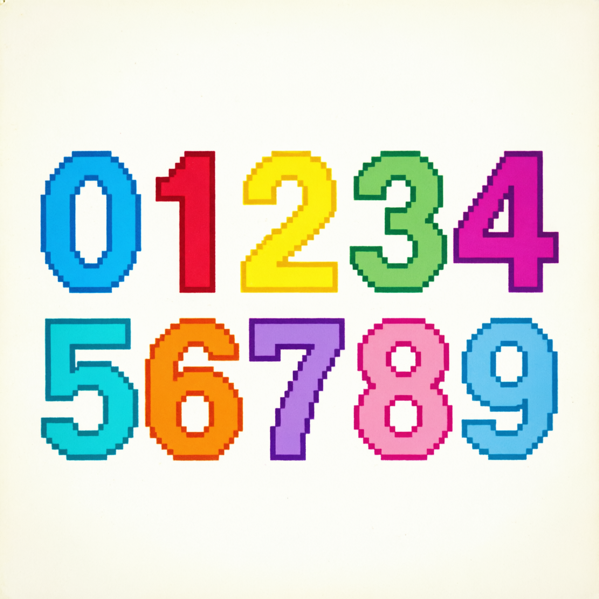
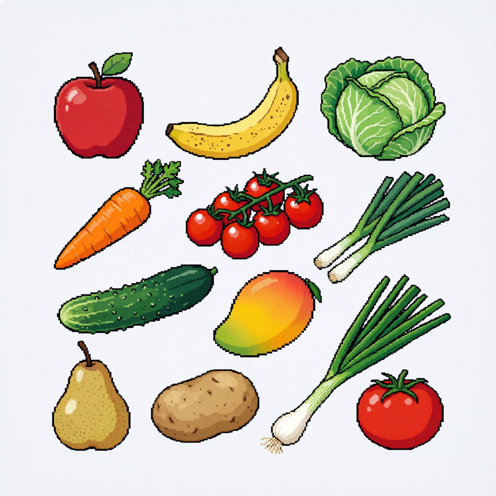

Image Classification
Image classification is the task of assigning a label or category to an input image. IE supports deploying lightweight classification networks on embedded devices with minimal footprint.
MNIST Handwritten Digit Recognition
Recognizes handwritten digits (0–9) using a compact convolutional network trained on the MNIST dataset.
The model is converted to .tflite format and deployed directly on MCU without any OS dependency.


Figure 1 Figure: MNIST digit recognition — predicted label overlaid on input image
Key specs
Input: 28 × 28 grayscale
Classes: 10 (digits 0–9)
Backend: CPU (SIMD optimized)
Vegetable & Fruit Classification
Classifies common vegetables and fruits captured by a color camera. Demonstrates multi-class inference on a resource-constrained platform.


Figure 2 Figure: Vegetable & fruit classification demo
Key specs
Input: 224 × 224 RGB
Classes: 36 categories
Backend: CPU
Coffee Bean Grading
Grades green coffee beans by defect type using a top-view camera, enabling inline quality control on production lines without a PC or GPU.

Figure 3 Figure: Coffee bean defect classification demo
Key specs
Input: 128 × 128 RGB
Classes: 5 grades
Backend: CPU